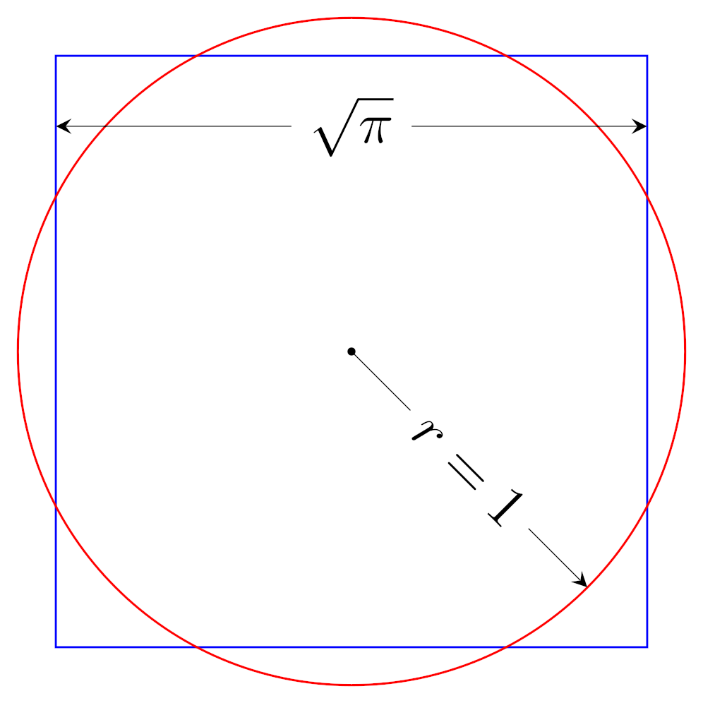

The Kenobi Theorem: How to actually square a circle
For years it was thought squaring the circle is impossible. One hobbyist thinks otherwise.
A squared circle | Wikimedia Commons 2025
Michael Adams
September 2, 2025
On the twenty-eigth of August this year, a math enthusiast going by the name Ben Kenobi reached out to DayCarteXYZ with a new proposal: That the famous “squaring the circle” problem is actually possible.
Squaring the circle refers to the Ancient Greek problem that asks if it is possible to construct a square with the same area as a circle with a known radius. In geometry, construction means only a compass and a straigtedge are allowed to be used to draw a shape. The problem has long been proven impossible, since a circle’s area is a multiple of π, which is a number that cannot be described with fractions or square roots.
And yet Ben Kenobi claims that he has found a way to square the circle. How is this possible? Well, Ben Kenobi highlights his methods through his self-titled theorem: The Kenobi Theorem. In his Email to us, he wrote: “All you have to do is use a flexible ruler. It’s still a straightedge, since it lies flat on the paper. Just bend the ruler around the circle, put your pencil on one end, and unbend the ruler. Then you have the the circle’s circumference.”
When you have a straight line representing the circumference, it is fairly trivial to construct a square from it. A rectangle can be made with a length equal to the circle’s circumference and a height equal to its radius. This rectangle has an area equal to the area of the circle. Then a square can be constructed with an area equal to the area of the rectangle—and by extension, the circle—as proved by Euler several millenia ago.
Unfortunately, this theorem does not matter, since it does not expand mathematical knowledge in any way, and instead relies on a bad-faith interpretation of a classical problem which is known to have no solution. So the Kenobi Theorem is likely to be lost to time, only ever reported on by a singular, online, unknown news site.